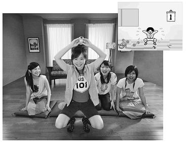

Happy Embarrassment
快乐，尴尬
If there’s one thing Lexulous players do even better than making obscure words out of random letters, it’s gently teasing each other in a way that makes them feel good. And the most effective way they tease each other is through trash-talking.
Trash-talking, when it’s a playful way to insult your competition, is almost as important to our enjoyment of social network games as the actual core gameplay. We crave the distinctly rewarding feeling we get from a good game when we soundly beat, or are beaten, by people we really like. More importantly, we crave the experience of teasing each other about it, in private and in public.
Consider, for example, the following public status updates from Lexulous players. These statements are visible to all members of their social network (including, no doubt, the people they are playing against), and sometimes to the whole world (which is how I happened to see them):“Playing Lexulous on Facebook with my mom. I’m winning. Hee hee hee!”16
16岁
If you’ve never pwned your mom, you’re clearly missing out.
To pwn someone—pronounced “pone” or “pawn,” though most people just type it—means to achieve such a major victory you can’t help but gloat afterward. It originates from a common typo of the word “own,” since the letters p and o are next to each other on a standard keyboard; “own” has long been a popular gamer shorthand for the boastful comment “I’m so good at this game, I own it.”18
18岁
Why is game pwning such an increasingly popular form of social interaction? And why, when we’re on the receiving end, do we happily put up with it?
Teasing each other, recent scientific research has shown, is one of the fastest and most effective ways to intensify our positive feelings for each other. Dacher Keltner, a leading researcher of prosocial emotions at the University of California, has conducted experiments on the psychological benefits of teasing, and he believes that teasing plays an invaluable role in helping us form and maintain positive relationships.19
19
“The tease is like a social vaccine,” Keltner explains. “It stimulates the recipient’s emotional system.” Teasingly trash-talking allows us to provoke each other’s negative emotions in a very mild way—we stimulate a very small amount of anger or hurt or embarrassment. This tiny provocation has two powerful effects. First, it confirms trust: the person doing the teasing is demonstrating the capacity to hurt, but simultaneously showing that the intention is not to hurt. Just like a dog might play-bite another dog to show that it wants to be friends, we bare our teeth to each other in order to remind each other that we could, but never really would, hurt each other. Conversely, by allowing someone else to tease us, we confirm our willingness to be in a vulnerable position. We are actively demonstrating our trust in the other person’s regard for our emotional well-being.
By letting someone tease us, we’re also helping them feel powerful. We’re giving them a moment to enjoy higher status in our social relationship—and humans are intensely attuned to shifts in social status. By letting someone else experience higher status, we intensify their positive feelings for us. Why? Because we naturally like people more when they enhance our own social status.
This is the essence of happy embarrassment and, according to Keltner’s research, we’re hardwired to feel it. He has documented the physiological basis for this complicated social effect in studies of face-to-face playful teasing and trash-talking. According to Keltner’s findings, the recipient of the tease almost invariably showed signs of lowered status, followed by an effort at reconciliation: gaze aversion, bowed head, nervous smile, hand touching the face, and so on. All of this is followed by a fleeting smile, a microexpression that indicates we actually enjoy being teased by people we trust. Meanwhile, the more obvious the display of lowered status, the more the teasers reported liking the teased afterward.
None of this is a conscious process, Keltner’s research shows. We mostly tease and let ourselves be teased because it feels good. But the reason why it feels good is that it builds trust and makes us more likable. Most of us might not realize exactly why it enhances our social connection, but we definitely feel the emotional net positive after a teasing exchange. And this emotional reward encourages us to practice and repeat the behavior.
With all the pwnage and trash-talking happening in our favorite social networking games, it’s clear that they are giving us a perfect and much needed space to practice and perform the good tease. Competitive games in particular give us an excuse to adopt playful postures of superiority, and to let our friends and family get away with the same.
We can also lower our status to strengthen our relationships by acting silly. This helps explain the appeal of the popular video game genre known as “party games.” A party game is a game that’s meant to be played socially, face-to-face, and is easy to pick up the first time you try. Rock Band is one of the most popular party games, and performing like a rock star—not to mention failing a set—in front of friends and family definitely qualifies as a status-raising or potentially happy-embarrassing moment.
Or consider WarioWare: Smooth Moves for the Wii, a game that is even more physical than Rock Band. (The Wii remote controller has an accelerometer that detects hand movements, as well as optical sensors to know where you’re pointing the device.) Like most party games for the Wii, to play it you have to perform it. Smooth Moves consists of more than two hundred different “microgames” that require you to do a silly physical movement quickly: flap your arms like a bird’s wing, mime twirling a hula hoop, shove virtual dentures into a virtual grandma’s mouth. You have five seconds to figure out what you’re supposed to do, based on the images on the screen. Trying to think and move that quickly usually results in flailing around, goofy-looking gestures, and occasionally falling over.

Promotion screenshot and gameplay image of WarioWare: Smooth Moves.
(Nintendo Corporation, 2007)
One reviewer reasonably asks: “Games this crazy shouldn’t be this popular, should they?”20
20 But they are hugely popular. Smooth Moves has sold more than 2 million copies. They are easy to learn and quick to deliver emotional rewards—if you’re willing to pick your virtual nose by shoving your game controller up and down, you really do trust the people around you.